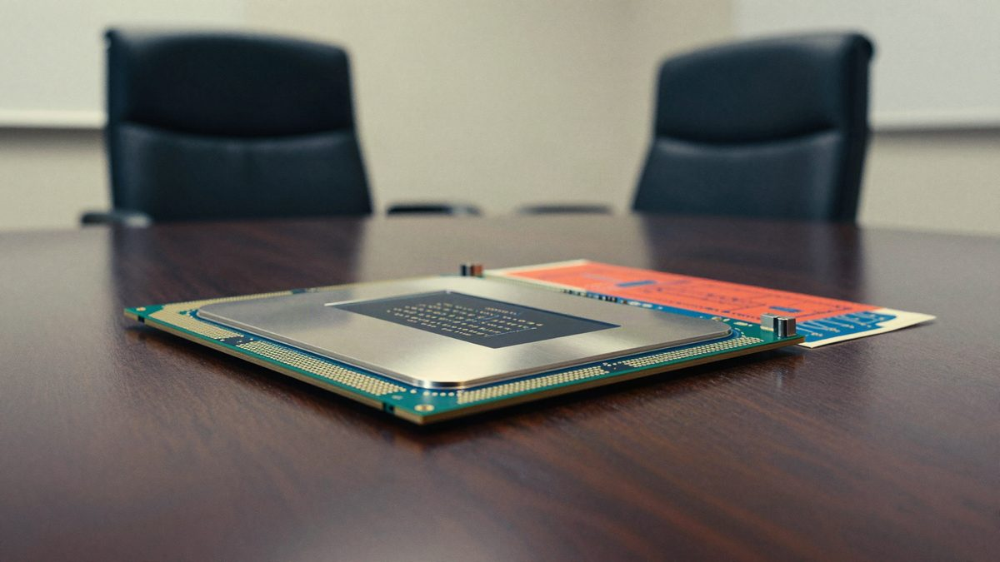

HZZO je u e-Građane uveo uslugu "Moja zdravstvena zaštita" s pregledom troškova liječenja
HZZO je 5. studenoga u sustavu e-Građani pokrenuo uslugu za uvid u vlastitu zdravstvenu zaštitu osiguranika. Osiguranici u njoj mogu pregledati posjete liječniku, specijalističke preglede, bolničko liječenje, terapije i lijekove iz ljekarne, zajedno s njihovom financijskom vrijednošću. Uslugu je razvio HZZO-ov tim za informacijske tehnologije.
HZZO je 5. studenoga u sustavu e-Građani uveo novu uslugu "Moja zdravstvena zaštita". Osiguranici u njoj mogu pregledati zdravstvene usluge koje su koristili, zajedno s njihovom točnom financijskom vrijednošću.
Prikazani podaci obuhvaćaju posjete obiteljskom liječniku i doktoru dentalne medicine, specijalističke preglede, bolničko liječenje, terapije i lijekove izdane u ljekarni. Pregled uključuje usluge iz javnih zdravstvenih ustanova, ali i kod privatnih ugovornih partnera HZZO-a. Tako osiguranik dobiva cjelovitiju sliku o vrijednosti zdravstvene zaštite koju koristi.
Dražen Kapusta, zamjenik ravnatelja HZZO-a, rekao je da je usluga još jedan važan korak u digitalizaciji i modernizaciji zavoda. Građani često nisu svjesni vrijednosti pojedinih pregleda, dijagnostičkih i operativnih zahvata, terapija ili lijekova, iako svi doprinosima sudjeluju u održivosti sustava obveznog zdravstvenog osiguranja. Kapusta tvrdi da će usluga svima približiti što im sustav osiguranja omogućuje i učiniti vidljivijom vrijednost prava koja kroz njega ostvaruju.
Razvoj unutar HZZO-a
Uslugu je razvio tim HZZO-ovih stručnjaka za informacijske tehnologije. Jelena Curać, pomoćnica ravnatelja HZZO-a za informacijske tehnologije, istaknula je da to potvrđuje stručne i razvojne kapacitete ustanove te njezinu mogućnost da vlastitim znanjem razvija digitalna rješenja prema potrebama osiguranika.
Usluga je dostupna unutar sustava e-Građani.
Izvor: Bug.hr
Povezani članci
 Fond je zaprimio oko 17.600 prijava za EV poticaje u sat vremena, natječaj se privremeno zatvara u podne5. studenoga 2026.
Fond je zaprimio oko 17.600 prijava za EV poticaje u sat vremena, natječaj se privremeno zatvara u podne5. studenoga 2026.- Claude sada otvara aplikacije poput Asane, Cance i Vercela izravno u chatu11. studenoga 2026.

Nvidia je pokrenula neovisnu istragu o Jensenu Huangu, Kongres traži zatvoreni sastanak 18. studenoga9. studenoga 2026.